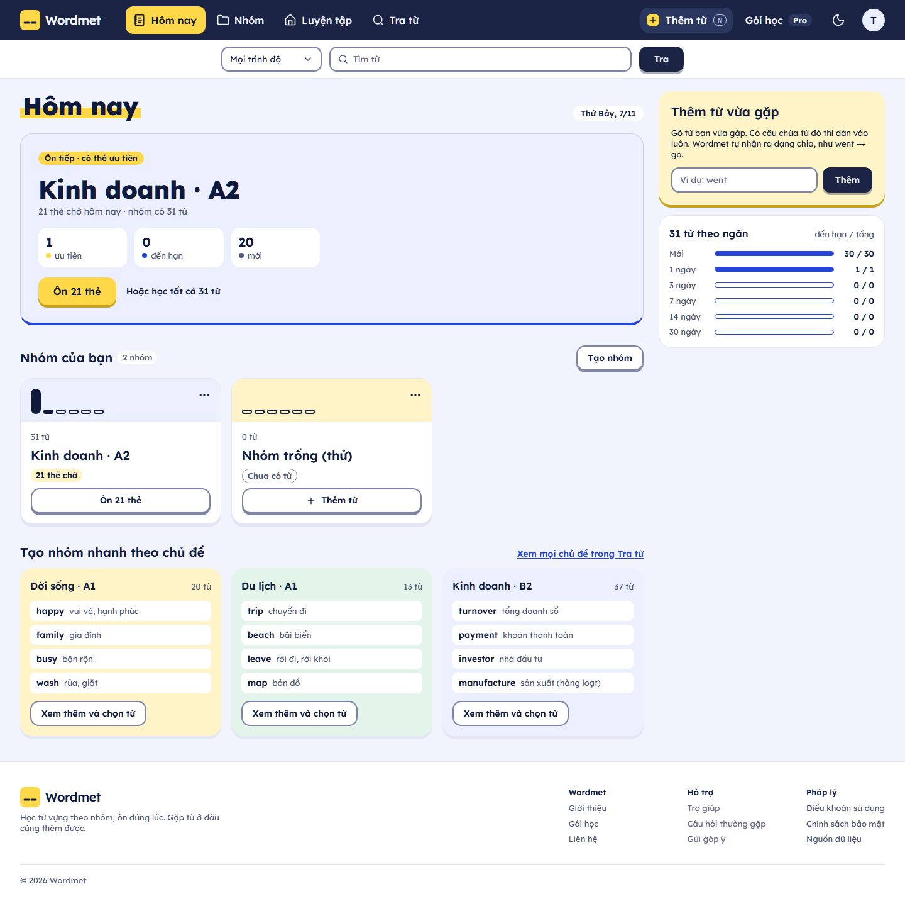

<title>Bốn tầng của trang Hôm nay</title>
<meta name="claude:viewport-fit-sides" content="cover">
<link rel="preconnect" href="https://fonts.googleapis.com">
<link rel="preconnect" href="https://fonts.gstatic.com" crossorigin>
<link rel="stylesheet" href="https://fonts.googleapis.com/css2?family=Be+Vietnam+Pro:wght@400;500;600;700&family=Lexend:wght@400;600;800&family=Bricolage+Grotesque:opsz,wght@12..96,400..800&family=Big+Shoulders+Display:wght@800&family=Chakra+Petch:wght@600;700&family=Familjen+Grotesk:wght@400;600&display=swap">
<style>
/* Layout: one reading column (max 1120px). A layer stack at the top, a tabbed "lens" over the real screenshot of
   today's page, then the restructure as before/after with a style switch. Page follows the viewer's theme;
   the wireframe skins (grey, B, D, K) are fixed palettes on purpose, because they show real styles. */
:root {
  --bg: #f6f6f4; --surface: #ffffff; --ink: #18181a; --muted: #55555c; --line: #dedede; --chip: #ececea;
  --l1: #1f7a52; --l1s: #dff1e7; --l2: #2b5bd7; --l2s: #e3eafc; --l3: #b8650a; --l3s: #fbecd9; --l4: #8a3fb8; --l4s: #f1e4f8;
  --know: #1f7a52; --guess: #b8650a; --off: #8a8a90;
  --f: 'Be Vietnam Pro', ui-sans-serif, system-ui, sans-serif;
}
@media (prefers-color-scheme: dark) { :root:not([data-theme="light"]) { --bg: #141416; --surface: #1d1d20; --ink: #ececee; --muted: #a6a6ad; --line: #34343a; --chip: #2a2a2f; --l1: #5cc893; --l1s: #17352a; --l2: #7fa2ff; --l2s: #1b2645; --l3: #f0a14a; --l3s: #3b2810; --l4: #d18cf5; --l4s: #33203f; --know: #5cc893; --guess: #f0a14a; --off: #8a8a90; color-scheme: dark } }
:root[data-theme="dark"] { --bg: #141416; --surface: #1d1d20; --ink: #ececee; --muted: #a6a6ad; --line: #34343a; --chip: #2a2a2f; --l1: #5cc893; --l1s: #17352a; --l2: #7fa2ff; --l2s: #1b2645; --l3: #f0a14a; --l3s: #3b2810; --l4: #d18cf5; --l4s: #33203f; --know: #5cc893; --guess: #f0a14a; --off: #8a8a90; color-scheme: dark }
*, *::before, *::after { box-sizing: border-box }
[hidden] { display: none !important }
body { margin: 0; background: var(--bg); color: var(--ink); font-family: var(--f); font-size: 16px; line-height: 1.6; -webkit-font-smoothing: antialiased }
.col { max-width: 1120px; margin: 0 auto; padding-block: 48px 72px; padding-left: max(16px, env(safe-area-inset-left, 0px)); padding-right: max(16px, env(safe-area-inset-right, 0px)) }
h1, h2, h3 { text-wrap: balance; margin: 0; letter-spacing: -.02em; line-height: 1.2 }
h1 { font-size: clamp(30px, 4vw, 44px); font-weight: 700 }
h2 { font-size: clamp(24px, 2.6vw, 30px); font-weight: 700 }
h3 { font-size: 18px; font-weight: 600 }
p { margin: 0 }
.lead { margin-top: 14px; max-width: 64ch; font-size: 18px; color: var(--muted) }
section + section { margin-top: 72px }
.sec-lead { margin-top: 10px; max-width: 70ch; color: var(--muted) }
button { font: inherit; color: inherit }
:focus-visible { outline: 2px solid var(--l2); outline-offset: 2px }
.tag { display: inline-block; font-size: 13px; font-weight: 600; padding: 1px 8px; border-radius: 6px; white-space: nowrap }
.tag.know { background: var(--l1s); color: var(--know) } .tag.guess { background: var(--l3s); color: var(--guess) } .tag.ask { background: var(--l4s); color: var(--l4) }

/* ---------- layer stack ---------- */
.stack { margin-top: 32px; display: grid; gap: 8px }
.layer { display: grid; grid-template-columns: 56px minmax(0, 1.1fr) minmax(0, 1fr) minmax(0, 1fr); gap: 16px; align-items: center; padding: 16px 18px; border-radius: 14px; background: var(--surface); border-left: 6px solid var(--c) }
.layer .n { width: 40px; height: 40px; border-radius: 12px; display: grid; place-items: center; font-weight: 700; background: var(--cs); color: var(--c) }
.layer .q, .layer .o { font-size: 15px; color: var(--muted) } .layer .q b, .layer .o b { color: var(--ink); font-weight: 600; display: block; font-size: 13px }
.layer.t1 { --c: var(--l1); --cs: var(--l1s); margin-inline: 0 } .layer.t2 { --c: var(--l2); --cs: var(--l2s); margin-inline: 2% } .layer.t3 { --c: var(--l3); --cs: var(--l3s); margin-inline: 4% } .layer.t4 { --c: var(--l4); --cs: var(--l4s); margin-inline: 6% }
@media (max-width: 760px) { .layer { grid-template-columns: 40px minmax(0, 1fr); margin-inline: 0 !important } .layer .q, .layer .o { grid-column: 2 } .layer .n { width: 32px; height: 32px } }
.order { margin-top: 14px; display: flex; gap: 14px; flex-wrap: wrap; align-items: center; font-size: 15px; color: var(--muted) }
.order b { color: var(--ink) }
.oops { margin-top: 18px; padding: 14px 18px; border-radius: 12px; background: var(--l3s); color: var(--ink); font-size: 15px; max-width: 80ch }

/* ---------- lens ---------- */
.tabs { margin-top: 24px; display: flex; flex-wrap: wrap; gap: 6px }
.tabs button { border: 0; cursor: pointer; padding: 9px 14px; border-radius: 10px; background: var(--chip); font-size: 15px; font-weight: 600; color: var(--muted); transition: background-color 160ms ease, color 160ms ease, transform 120ms cubic-bezier(.23,1,.32,1) }
.tabs button:active { transform: scale(.97) }
.tabs button[aria-selected="true"] { background: var(--c); color: #fff }
.tabs button[data-t="1"] { --c: var(--l1) } .tabs button[data-t="2"] { --c: var(--l2) } .tabs button[data-t="3"] { --c: var(--l3) } .tabs button[data-t="4"] { --c: var(--l4) }
.lens { margin-top: 14px; display: grid; grid-template-columns: minmax(0, 1.35fr) minmax(0, 1fr); gap: 20px; align-items: start }
@media (max-width: 900px) { .lens { grid-template-columns: 1fr } }
.shot-wrap { position: sticky; top: 16px; border-radius: 12px; overflow: hidden; background: var(--surface); box-shadow: 0 0 0 1px var(--line) }
@media (max-width: 900px) { .shot-wrap { position: relative; top: 0 } }
.shot { position: relative; line-height: 0 }
.shot img { width: 100%; height: auto; display: block; transition: filter 400ms ease }
.shot.squint img { filter: grayscale(1) blur(5px) }
.ov { position: absolute; border-radius: 6px; line-height: 1.2; transition: opacity 200ms ease }
.ov.box { border: 3px solid var(--c); background: color-mix(in srgb, var(--c) 16%, transparent) }
.ov.hatch { border: 3px dashed var(--off); background: repeating-linear-gradient(45deg, rgb(120 120 128 / .22) 0 6px, transparent 6px 12px) }
.ov .lab { position: absolute; left: 6px; top: 6px; padding: 2px 7px; border-radius: 6px; background: var(--c); color: #fff; font-size: 12px; font-weight: 600; white-space: nowrap }
.ov.hatch .lab { background: #6b6b72 }
.pin { position: absolute; width: 26px; height: 26px; margin: -13px 0 0 -13px; border-radius: 50%; background: var(--c, #222); color: #fff; display: grid; place-items: center; font-size: 13px; font-weight: 700; line-height: 1; box-shadow: 0 0 0 3px #fff }
.ring { position: absolute; border: 3px solid var(--c); border-radius: 8px }
.shot-cap { padding: 10px 14px; font-size: 13px; color: var(--muted); line-height: 1.5 }
.panel { display: grid; gap: 16px }
.card { background: var(--surface); border-radius: 14px; padding: 18px 20px; box-shadow: 0 0 0 1px var(--line) }
.card h3 { margin-bottom: 8px }
.card p + p, .card p + ul, .card ul + p { margin-top: 10px }
.card ul, .card ol { margin: 8px 0 0; padding-left: 20px }
.card li + li { margin-top: 6px }
.legend { display: grid; gap: 8px; margin-top: 10px; font-size: 15px }
.legend span { display: flex; gap: 10px; align-items: flex-start }
.legend i { width: 18px; height: 18px; flex: none; margin-top: 3px; border-radius: 4px; border: 3px solid var(--c); background: color-mix(in srgb, var(--c) 16%, transparent) }
.legend i.h { border: 3px dashed var(--off); background: repeating-linear-gradient(45deg, rgb(120 120 128 / .3) 0 4px, transparent 4px 8px) }
.sentence { font-size: 19px; line-height: 1.7; font-weight: 500 }
.sentence .blank { padding: 1px 6px; border-radius: 6px; font-weight: 600 }
.sentence .blank.k { background: var(--l1s); color: var(--know) } .sentence .blank.g { background: var(--l3s); color: var(--guess) }
.bars { display: grid; gap: 10px; margin-top: 10px }
.bar { display: grid; grid-template-columns: minmax(0, 1fr) 56px; gap: 10px; align-items: center; font-size: 15px }
.bar .tr { grid-column: 1 / -1; height: 10px; border-radius: 6px; background: var(--chip); overflow: hidden }
.bar .tr i { display: block; height: 100%; background: var(--l1); border-radius: 6px; transform-origin: left; transform: scaleX(var(--v)) }
.bar b { text-align: right; font-variant-numeric: tabular-nums }
.src { font-size: 13px; color: var(--muted); margin-top: 10px }
.sw-btn { margin-top: 12px; border: 0; cursor: pointer; padding: 10px 14px; border-radius: 10px; background: var(--ink); color: var(--bg); font-weight: 600 }
.sw-btn:active { transform: scale(.97) }
.inv { display: grid; gap: 14px; margin-top: 8px }
.inv-row h4 { margin: 0 0 6px; font-size: 14px; font-weight: 600 }
.sizes { display: grid; gap: 4px }
.sizes div { display: grid; grid-template-columns: 52px minmax(0, 1fr) 30px; gap: 8px; align-items: center; font-size: 14px; font-variant-numeric: tabular-nums }
.sizes i { display: block; height: 8px; border-radius: 4px; background: var(--l3); width: calc(var(--n) / 55 * 100%) }
.sizes span:last-child { text-align: right; color: var(--muted) }
.swatches { display: flex; flex-wrap: wrap; gap: 6px }
.swatches i { width: 28px; height: 28px; border-radius: 7px; box-shadow: 0 0 0 1px var(--line) }
.roles { margin: 6px 0 0; padding-left: 0; list-style: none; display: grid; gap: 4px; font-size: 15px; counter-reset: r }
.roles li { display: grid; grid-template-columns: 26px minmax(0, 1fr); gap: 8px; align-items: start }
.roles li::before { counter-increment: r; content: counter(r); width: 22px; height: 22px; border-radius: 50%; background: #e0a800; color: #1b1b1b; display: grid; place-items: center; font-size: 12px; font-weight: 700; margin-top: 2px }
.tbl { width: 100%; border-collapse: collapse; font-size: 15px; margin-top: 8px }
.tbl th, .tbl td { text-align: left; padding: 8px 8px; vertical-align: top; border-bottom: 1px solid var(--line) }
.tbl th { font-size: 13px; color: var(--muted); font-weight: 600 }
.tbl-wrap { overflow-x: auto }

/* ---------- restructure ---------- */
.ba { margin-top: 24px; display: grid; grid-template-columns: minmax(0, 1fr) minmax(0, 1fr); gap: 20px; align-items: start }
@media (max-width: 900px) { .ba { grid-template-columns: 1fr } }
.ba-h { display: flex; justify-content: space-between; align-items: baseline; gap: 10px; flex-wrap: wrap; margin-bottom: 8px }
.ba-h h3 { font-size: 17px }
.ba-h span { font-size: 13px; color: var(--muted) }
.before { border-radius: 12px; overflow: hidden; box-shadow: 0 0 0 1px var(--line); line-height: 0 }
.before img { width: 100%; display: block }
.ctrls { display: flex; flex-wrap: wrap; gap: 8px 14px; align-items: center; margin-top: 18px }
.seg { display: inline-flex; flex-wrap: wrap; gap: 2px; padding: 3px; border-radius: 10px; background: var(--chip) }
.seg button { border: 0; cursor: pointer; padding: 7px 12px; border-radius: 8px; background: transparent; font-size: 14px; font-weight: 600; color: var(--muted) }
.seg button[aria-pressed="true"] { background: var(--surface); color: var(--ink); box-shadow: 0 1px 2px rgb(0 0 0 / .12) }
.ctrls label { font-size: 14px; color: var(--muted) }

/* wireframe "after": one markup, four skins */
.wf-stage { margin-top: 12px; container-type: inline-size; transition: max-width 300ms cubic-bezier(.77,0,.175,1) }
.wf-stage.phone { max-width: 390px; margin-inline: auto }
.wf { --w-bg: #ededed; --w-surf: #ffffff; --w-ink: #222; --w-muted: #6a6a6a; --w-act: #222; --w-on-act: #fff; --w-soft: #e1e1e1; --w-bar: #d4d4d4; --w-nav: #ffffff; --w-on-nav: #222; --w-r: 6px; --w-r-btn: 6px; --w-ledge: none; --w-f: ui-sans-serif, system-ui, sans-serif; --w-fd: var(--w-f); --w-fn: var(--w-f); --w-up: none; --w-dots: none;
  background-color: var(--w-bg); background-image: var(--w-dots); color: var(--w-ink); font-family: var(--w-f); border-radius: 12px; overflow: hidden; box-shadow: 0 0 0 1px var(--line); line-height: 1.45; transition: background-color 300ms ease, color 300ms ease }
.wf * { transition: background-color 300ms ease, color 300ms ease, border-radius 300ms ease }
.wf.sk-b { --w-bg: #f1f3fd; --w-surf: #ffffff; --w-ink: #0f1a3d; --w-muted: #4d5577; --w-act: #ffd84a; --w-on-act: #0f1a3d; --w-soft: #eceffe; --w-bar: #2445d6; --w-nav: #1b2444; --w-on-nav: #f1f3fd; --w-r: 18px; --w-r-btn: 12px; --w-ledge: 0 4px 0 #c9a21a; --w-f: 'Lexend', sans-serif; --w-fd: 'Lexend', sans-serif; --w-fn: 'Lexend', sans-serif }
.wf.sk-d { --w-bg: #f5f5f7; --w-surf: #ffffff; --w-ink: #0c0c10; --w-muted: #6d6d78; --w-act: #0c0c10; --w-on-act: #ffffff; --w-soft: #ececf1; --w-bar: #d6336c; --w-nav: #f5f5f7; --w-on-nav: #0c0c10; --w-r: 14px; --w-r-btn: 12px; --w-f: 'Bricolage Grotesque', sans-serif; --w-fd: 'Bricolage Grotesque', sans-serif; --w-fn: 'Bricolage Grotesque', sans-serif }
.wf.sk-k { --w-bg: #e9e6f1; --w-dots: radial-gradient(rgb(26 21 48 / .07) 1.2px, transparent 1.4px); --w-surf: #f7f5f0; --w-ink: #1a1530; --w-muted: #5f5a78; --w-act: #6b3cf0; --w-on-act: #ffffff; --w-soft: #ebe7f6; --w-bar: #6b3cf0; --w-nav: #1a1530; --w-on-nav: #f7f5f0; --w-r: 10px; --w-r-btn: 10px; --w-ledge: 0 4px 0 #4b22c4; --w-f: 'Familjen Grotesk', sans-serif; --w-fd: 'Big Shoulders Display', sans-serif; --w-fn: 'Chakra Petch', sans-serif; --w-up: uppercase; background-size: 18px 18px }
.wf-bar { display: flex; align-items: center; gap: 14px; padding: 12px 18px; background: var(--w-nav); color: var(--w-on-nav); font-size: 14px }
.wf-bar .logo { font-weight: 700; font-family: var(--w-fd); text-transform: var(--w-up); letter-spacing: .01em }
.wf-bar .nav { display: flex; gap: 14px; opacity: .85 }
.wf-bar .nav b { opacity: 1; text-decoration: underline; text-underline-offset: 6px; text-decoration-thickness: 2px }
.wf-bar .search { flex: 1; max-width: 260px; margin-left: auto; padding: 6px 10px; border-radius: 8px; background: color-mix(in srgb, var(--w-on-nav) 12%, transparent); color: inherit; opacity: .9 }
.wf-bar .add { padding: 6px 10px; border-radius: 8px; box-shadow: inset 0 0 0 1.5px currentColor; white-space: nowrap }
.wf-main { display: grid; grid-template-columns: minmax(0, 1.7fr) minmax(0, 1fr); gap: 16px; padding: 22px 18px 24px }
.wf-blk { position: relative; background: var(--w-surf); border-radius: var(--w-r); padding: 18px 18px 18px }
.wf-blk .num { position: absolute; right: 10px; top: 10px; width: 22px; height: 22px; border-radius: 50%; background: var(--w-ink); color: var(--w-surf); display: grid; place-items: center; font: 700 12px/1 var(--f) }
.wf.hide-nums .num { display: none }
.wf-day { font-size: 13px; color: var(--w-muted); font-family: var(--w-fn) }
.wf-h { margin-top: 2px; font-family: var(--w-fd); text-transform: var(--w-up); font-size: clamp(26px, 5.4cqi, 44px); font-weight: 800; letter-spacing: -.03em; line-height: 1.14 }
.wf.sk-k .wf-h { letter-spacing: .01em }
.wf-line { margin-top: 6px; font-size: 15px; color: var(--w-muted) }
.wf-cta { display: flex; align-items: center; gap: 14px; flex-wrap: wrap; margin-top: 16px }
.wf-btn { display: inline-flex; align-items: center; min-height: 48px; padding: 0 22px; border-radius: var(--w-r-btn); background: var(--w-act); color: var(--w-on-act); font-weight: 700; font-family: var(--w-fn); box-shadow: var(--w-ledge); text-transform: var(--w-up) }
.wf-sub { font-size: 14px; text-decoration: underline; text-underline-offset: 4px; color: var(--w-ink) }
.wf-return { margin-top: 14px; padding: 10px 12px; border-radius: calc(var(--w-r) * .6); background: var(--w-soft); font-size: 14px }
.wf-return b { font-family: var(--w-fn) }
.wf-col { display: grid; gap: 16px; align-content: start }
.wf-t { font-size: 15px; font-weight: 700; font-family: var(--w-fd); text-transform: var(--w-up); letter-spacing: .01em }
.wf-in { display: flex; gap: 8px; margin-top: 10px }
.wf-in span { flex: 1; padding: 9px 10px; border-radius: 8px; background: var(--w-soft); color: var(--w-muted); font-size: 14px }
.wf-in b { padding: 9px 12px; border-radius: 8px; box-shadow: inset 0 0 0 1.5px var(--w-ink); font-size: 14px }
.wf-note { margin-top: 8px; font-size: 13px; color: var(--w-muted) }
.wf-decks { grid-column: 1 / 2 }
.wf-row { display: grid; grid-template-columns: minmax(0, 1fr) auto auto; gap: 12px; align-items: center; padding: 10px 0; border-top: 1px solid var(--w-soft); font-size: 15px }
.wf-row:first-of-type { border-top: 0; margin-top: 8px }
.wf-row .c { font-family: var(--w-fn); font-weight: 700 }
.wf-row .go { font-size: 14px; text-decoration: underline; text-underline-offset: 3px }
.wf-row .mini { display: flex; gap: 2px } .wf-row .mini i { width: 10px; height: 10px; border-radius: 2px; background: var(--w-soft) } .wf-row .mini i.f { background: var(--w-bar) }
.wf-prog { display: grid; grid-template-columns: repeat(6, minmax(0, 1fr)); gap: 6px; align-items: end; height: 70px; margin-top: 10px }
.wf-prog i { display: block; border-radius: 3px; background: var(--w-soft); height: calc(var(--h) * 100%); position: relative; overflow: hidden }
.wf-prog i::after { content: ""; position: absolute; left: 0; right: 0; bottom: 0; height: calc(var(--d) * 100%); background: var(--w-bar) }
.wf-prog-l { display: grid; grid-template-columns: repeat(6, minmax(0, 1fr)); gap: 6px; font-size: 11px; color: var(--w-muted); text-align: center; margin-top: 4px }
.wf-foot { padding: 10px 18px 14px; font-size: 12px; color: var(--w-muted) }
@container (max-width: 560px) {
  .wf-bar .nav, .wf-bar .search { display: none } .wf-bar .add { margin-left: auto }
  .wf-main { grid-template-columns: 1fr; padding: 16px 12px 18px }
  .wf-decks { grid-column: auto }
  /* on a phone the blocks run in priority order, whatever column they sit in on a wide screen */
  .wf-col { display: contents }
  .wf-blk[data-n="1"] { order: 1 } .wf-blk[data-n="2"] { order: 2 } .wf-blk[data-n="3"] { order: 3 } .wf-blk[data-n="4"] { order: 4 }
}
.ba.desk { grid-template-columns: 1fr }
.ba.desk .before { max-width: 100% }
.changes { margin-top: 28px; display: grid; gap: 14px }
.chg { display: grid; grid-template-columns: 8px minmax(0, 1fr); gap: 14px; background: var(--surface); border-radius: 14px; padding: 16px 18px 16px 0; box-shadow: 0 0 0 1px var(--line); overflow: hidden }
.chg::before { content: ""; background: var(--c); margin: -16px 0 }
.chg.t1 { --c: var(--l1) } .chg.t2 { --c: var(--l2) } .chg.t3 { --c: var(--l3) } .chg.t4 { --c: var(--l4) }
.chg h3 { font-size: 17px }
.chg ul { margin: 8px 0 0; padding-left: 20px } .chg li + li { margin-top: 6px }
.decide { counter-reset: d; list-style: none; padding: 0; margin: 14px 0 0; display: grid; gap: 12px }
.decide li { background: var(--surface); border-radius: 14px; padding: 16px 18px; box-shadow: 0 0 0 1px var(--line) }
.decide li > b { display: block; margin-bottom: 4px }
.decide li p { color: var(--muted); font-size: 15px }
.other { margin-top: 12px; display: grid; gap: 8px; font-size: 15px }
.other div { padding: 12px 16px; border-radius: 12px; background: var(--surface); box-shadow: 0 0 0 1px var(--line) }
.foot { margin-top: 56px; font-size: 13px; color: var(--muted); max-width: 90ch }
@media (prefers-reduced-motion: reduce) { *, *::before, *::after { transition-duration: 1ms !important } }
</style>

<main class="col">
  <header>
    <h1>Bốn tầng của trang Hôm nay</h1>
    <p class="lead">Thiết kế đi từ dưới lên: hiểu vấn đề, xếp cấu trúc, đặt hệ thống, rồi mới chọn phong cách. Trang này áp từng tầng vào trang Hôm nay đang chạy trên máy local (ảnh chụp ngày 7/11/2026, tài khoản thử của Lan), rồi đề xuất cách dựng lại.</p>
  </header>

  <section aria-labelledby="h-stack">
    <h2 id="h-stack">Bốn tầng, quyết từ dưới lên</h2>
    <div class="stack">
      <div class="layer t1"><span class="n">1</span><h3>Vấn đề</h3><p class="q"><b>Câu hỏi</b>Ai dùng trang này, để làm việc gì, trong hoàn cảnh nào?</p><p class="o"><b>Ra được</b>Một câu mục tiêu, mỗi ý ghi rõ biết hay đoán</p></div>
      <div class="layer t2"><span class="n">2</span><h3>Cấu trúc</h3><p class="q"><b>Câu hỏi</b>Trên màn có gì? Người dùng thấy gì đầu tiên, thứ hai, thứ ba?</p><p class="o"><b>Ra được</b>Bản khung xám, chưa có màu</p></div>
      <div class="layer t3"><span class="n">3</span><h3>Hệ thống</h3><p class="q"><b>Câu hỏi</b>Mấy cỡ chữ, mấy khoảng cách, mỗi màu mang nghĩa gì?</p><p class="o"><b>Ra được</b>Bảng quy ước (token) dùng chung cho mọi trang</p></div>
      <div class="layer t4"><span class="n">4</span><h3>Phong cách</h3><p class="q"><b>Câu hỏi</b>Sản phẩm mang tính cách gì: font, màu chủ đạo, chuyển động?</p><p class="o"><b>Ra được</b>Mockup màu, chọn giữa D và K</p></div>
    </div>
    <p class="order"><b>Thứ tự quyết:</b> 1 → 2 → 3 → 4. Tầng trên không sửa được lỗi của tầng dưới: một bố cục chọn sai việc chính thì đổi màu đẹp đến đâu vẫn sai.</p>
    <p class="oops">Các vòng mockup trước bắt đầu từ tầng 4 (lịch bloc, bảng giờ tàu, thẻ bài…) khi tầng 1 và 2 còn trống, nên không có tiêu chí nào để so chúng ngoài cảm giác.</p>
  </section>

  <section aria-labelledby="h-lens">
    <h2 id="h-lens">Soi trang hiện tại qua từng tầng</h2>
    <p class="sec-lead">Chọn một tầng. Ảnh bên trái là trang Hôm nay thật ở bề ngang 1440 px; các khung màu cho thấy tầng đó nhìn trang thế nào.</p>
    <div class="tabs" role="tablist" aria-label="Chọn tầng">
      <button type="button" role="tab" data-t="1" aria-selected="true" aria-controls="p1">1 · Vấn đề</button>
      <button type="button" role="tab" data-t="2" aria-selected="false" aria-controls="p2">2 · Cấu trúc</button>
      <button type="button" role="tab" data-t="3" aria-selected="false" aria-controls="p3">3 · Hệ thống</button>
      <button type="button" role="tab" data-t="4" aria-selected="false" aria-controls="p4">4 · Phong cách</button>
    </div>
    <div class="lens">
      <div class="shot-wrap">
        <div class="shot" id="shot">
          
          <div class="ovset" data-t="1" id="ov1"></div>
          <div class="ovset" data-t="2" id="ov2" hidden></div>
          <div class="ovset" data-t="3" id="ov3" hidden></div>
        </div>
        <p class="shot-cap" id="cap">Ảnh chụp trang <code>/vi/app</code> trên stack local, 7/11/2026.</p>
      </div>

      <div class="panel" id="p1" role="tabpanel">
        <div class="card">
          <h3>Việc của trang này</h3>
          <p class="sentence">Trang Hôm nay giúp <span class="blank k">người học, phần lớn là sinh viên</span> <span class="blank g">bắt đầu phần ôn của ngày chỉ bằng một lần bấm</span> khi <span class="blank k">mở app, kể cả sau vài hôm bỏ dở</span>.</p>
          <p style="margin-top:10px"><span class="tag know">biết</span> có dữ liệu &nbsp; <span class="tag guess">đoán</span> chưa có, cần kiểm</p>
        </div>
        <div class="card">
          <h3>Dữ liệu đang có</h3>
          <p>Khảo sát Google Form 30/09/2026: 13 phản hồi có nội dung, 12 người đang học.</p>
          <div class="bars">
            <div class="bar"><span>Chọn "khó duy trì đều đặn" là trở ngại lớn nhất</span><b>8/12</b><span class="tr"><i style="--v:.667"></i></span></div>
            <div class="bar"><span>Chỉ học 0–1 ngày trong 7 ngày gần nhất</span><b>5/12</b><span class="tr"><i style="--v:.417"></i></span></div>
            <div class="bar"><span>Có dùng AI trò chuyện trong 30 ngày</span><b>9/12</b><span class="tr"><i style="--v:.75"></i></span></div>
          </div>
          <p class="src">Nguồn: docs/preparation/SURVEY_ANALYSIS_2026-09-30.md. Mẫu nhỏ, chủ yếu sinh viên, không đại diện thị trường.</p>
        </div>
        <div class="card">
          <h3>Trang hiện tại phục vụ việc đó tới đâu</h3>
          <div class="legend">
            <span><i style="--c: var(--l1)"></i>Việc chính: bắt đầu ôn. Chiếm khoảng 15% diện tích trang.</span>
            <span><i style="--c: var(--l2)"></i>Việc phụ: ghi từ vừa gặp, xem nhóm.</span>
            <span><i class="h"></i>Không phải việc của người mở trang để ôn: dải tìm kiếm thứ hai, gợi ý chủ đề, footer giới thiệu. Cộng lại khoảng 35% diện tích, hơn gấp đôi khối ôn.</span>
          </div>
          <p>Trang chưa có gì dành riêng cho người quay lại sau mấy hôm vắng, trong khi đó là nhóm lớn nhất theo khảo sát. Thẻ dồn lại thì số trên nút chỉ lớn dần (tối đa 100 thẻ mỗi nhóm mỗi ngày theo cài đặt mặc định).</p>
        </div>
      </div>

      <div class="panel" id="p2" role="tabpanel" hidden>
        <div class="card">
          <h3>Phép thử nheo mắt</h3>
          <p>Bỏ màu, làm mờ chữ, chỉ còn các mảng sáng tối. Mảng nào đậm và to nhất là thứ mắt bắt đầu tiên.</p>
          <button type="button" class="sw-btn" id="squint" aria-pressed="false">Nheo mắt</button>
        </div>
        <div class="card">
          <h3>Mắt đang đi theo thứ tự này</h3>
          <ol>
            <li><b>Thanh điều hướng</b> (1): mảng tối nhất trang.</li>
            <li><b>Nút "Tra" và "Thêm"</b> (2): hai nút đậm nhất trang, đều là việc phụ.</li>
            <li><b>Tiêu đề "Hôm nay" và "Kinh doanh · A2"</b>: to và đậm.</li>
            <li><b>Nút "Ôn 21 thẻ"</b> (3): khi bỏ màu, nút vàng gần như chìm vào nền. Nó nổi chỉ nhờ sắc vàng, không nhờ độ đậm hay kích thước.</li>
          </ol>
          <p>Thêm hai điểm cấu trúc: cùng một việc "Ôn 21 thẻ" có <b>hai nút</b> (3 và 4), và người dùng phải qua <b>125 px khung</b> (thanh điều hướng và dải tìm kiếm, 5) mới tới tiêu đề.</p>
        </div>
        <div class="card">
          <h3>Thứ tự nên có</h3>
          <ol>
            <li>Số thẻ hôm nay và nút Ôn (một nút, đậm nhất trang).</li>
            <li>Ô ghi từ vừa gặp.</li>
            <li>Danh sách nhóm, gọn một dòng mỗi nhóm.</li>
            <li>Tiến độ theo ngăn, nhỏ, xem khi cần.</li>
          </ol>
        </div>
      </div>

      <div class="panel" id="p3" role="tabpanel" hidden>
        <div class="card">
          <h3>Màu vàng đang làm mười việc</h3>
          <p>Một màu chỉ có ý nghĩa khi nó mang một nghĩa. Trên trang này, vàng và vàng nhạt xuất hiện ở:</p>
          <ol class="roles">
            <li>Logo</li><li>Mục đang mở "Hôm nay" trên thanh điều hướng</li><li>Biểu tượng nút Thêm từ</li><li>Vệt tô dưới chữ "Hôm nay"</li><li>Nhãn "Ôn tiếp · có thẻ ưu tiên"</li><li>Chấm "ưu tiên"</li><li>Nút "Ôn 21 thẻ"</li><li>Nền ô "Thêm từ vừa gặp"</li><li>Nhãn "21 thẻ chờ"</li><li>Nền thẻ chủ đề "Đời sống · A1"</li>
          </ol>
          <p>Vì vậy khi mắt thấy vàng, nó không biết vàng nghĩa là "bấm vào đây", "bạn đang ở đây" hay "trang trí".</p>
        </div>
        <div class="card">
          <h3>Đo trên trang thật</h3>
          <div class="inv">
            <div class="inv-row"><h4>Cỡ chữ (số đoạn chữ dùng cỡ đó)</h4>
              <div class="sizes"><div><span>13 px</span><i style="--n:55"></i><span>55</span></div><div><span>14 px</span><i style="--n:24"></i><span>24</span></div><div><span>16 px</span><i style="--n:15"></i><span>15</span></div><div><span>20 px</span><i style="--n:10"></i><span>10</span></div><div><span>40 px</span><i style="--n:2"></i><span>2</span></div></div>
              <p class="src">Năm cỡ là số hợp lý; vấn đề là cỡ 13 px chiếm phần lớn chữ, nên trang đọc như toàn chú thích.</p>
            </div>
            <div class="inv-row"><h4>11 màu nền</h4>
              <div class="swatches"><i style="background:#ffffff"></i><i style="background:#f1f3fd"></i><i style="background:#eceffe"></i><i style="background:#fff4c7"></i><i style="background:#ffd84a"></i><i style="background:#e3f4ea"></i><i style="background:#2445d6"></i><i style="background:#4d5577"></i><i style="background:#2c3760"></i><i style="background:#1b2444"></i><i style="background:#0f1a3d"></i></div>
            </div>
            <div class="inv-row"><h4>5 độ bo góc, 5 độ đậm chữ</h4><p class="src" style="margin-top:0">Bo góc 8, 12, 14, 20 px và tròn hẳn. Độ đậm 400, 500, 600, 700, 800.</p></div>
          </div>
        </div>
        <div class="card">
          <h3>Mục tiêu của tầng này</h3>
          <div class="tbl-wrap"><table class="tbl">
            <thead><tr><th>Quy ước</th><th>Hiện tại</th><th>Nên</th></tr></thead>
            <tbody>
              <tr><td>Màu hành động chính</td><td>vàng, kèm 9 vai khác</td><td>một màu, chỉ cho hành động chính</td></tr>
              <tr><td>Mục đang mở</td><td>nền vàng</td><td>gạch chân hoặc chữ đậm</td></tr>
              <tr><td>Màu nền</td><td>11</td><td>khoảng 6: nền, mặt, hành động, chữ, đúng, sai</td></tr>
              <tr><td>Chữ thân</td><td>phần lớn 13 px</td><td>16 px; 13 px chỉ cho số phụ</td></tr>
              <tr><td>Bo góc</td><td>5 mức</td><td>3: ô nhập, thẻ, nút tròn</td></tr>
              <tr><td>Độ đậm</td><td>5 mức</td><td>3: thường, đậm vừa, đậm</td></tr>
            </tbody>
          </table></div>
        </div>
      </div>

      <div class="panel" id="p4" role="tabpanel" hidden>
        <div class="card">
          <h3>Phong cách là lớp áo</h3>
          <p>Phong cách hiện tại (hướng B): font Lexend, nền xanh nhạt, thanh navy, nút vàng có gờ phẳng bên dưới. Hầu hết vấn đề ở ba tầng trước không do phong cách gây ra: đổi sang D hay K mà giữ nguyên cấu trúc và cách dùng màu thì các vấn đề đó vẫn còn.</p>
          <p>Ở phần Tái cấu trúc bên dưới, bản khung xám có nút đổi phong cách: B hiện tại, D · Tiêu điểm, K · Thẻ bài. Cấu trúc giữ nguyên, chỉ lớp áo thay. Đó là lý do phong cách được quyết sau cùng.</p>
        </div>
        <div class="card">
          <h3>Phong cách vẫn phải phục vụ tầng dưới</h3>
          <ul>
            <li>Màu hành động của style mới phải là mảng đậm nhất trang, qua được phép thử nheo mắt.</li>
            <li>Font hiển thị phải có dấu tiếng Việt và đủ giãn dòng (K dùng Big Shoulders, cần line-height từ 1,14).</li>
            <li>Chuyển động chỉ đặt ở chỗ hiếm gặp (mở trang lần đầu trong ngày), không ở nút bấm nhiều lần mỗi ngày.</li>
          </ul>
        </div>
      </div>
    </div>
  </section>

  <section aria-labelledby="h-re">
    <h2 id="h-re">Tái cấu trúc trang Hôm nay</h2>
    <p class="sec-lead">Bên phải là đầu ra của tầng 2: bản khung, mỗi khối đánh số theo thứ tự ưu tiên. Đổi phong cách để thấy cấu trúc không đổi.</p>
    <div class="ctrls">
      <span class="seg" role="group" aria-label="Phong cách">
        <button type="button" data-skin="" aria-pressed="true">Khung xám</button>
        <button type="button" data-skin="sk-b" aria-pressed="false">B hiện tại</button>
        <button type="button" data-skin="sk-d" aria-pressed="false">D · Tiêu điểm</button>
        <button type="button" data-skin="sk-k" aria-pressed="false">K · Thẻ bài</button>
      </span>
      <span class="seg" role="group" aria-label="Khung xem">
        <button type="button" data-view="desk" aria-pressed="true">Máy tính</button>
        <button type="button" data-view="phone" aria-pressed="false">Điện thoại</button>
      </span>
      <span class="seg" role="group" aria-label="Trường hợp">
        <button type="button" data-case="day" aria-pressed="true">Ngày thường</button>
        <button type="button" data-case="back" aria-pressed="false">Vắng 3 hôm</button>
      </span>
    </div>
    <div class="ba desk" id="ba">
      <div>
        <div class="ba-h"><h3>Hiện tại</h3><span id="beforeNote">1440 px</span></div>
        <div class="before"></div>
      </div>
      <div>
        <div class="ba-h"><h3>Đề xuất</h3><span id="afterNote">khung, số thẻ là của tài khoản thử</span></div>
        <div class="wf-stage" id="wfStage">
          <div class="wf" id="wf">
            <div class="wf-bar"><span class="logo">Wordmet</span><span class="nav"><b>Hôm nay</b><span>Nhóm</span><span>Luyện tập</span></span><span class="search">Tra từ… /</span><span class="add">+ Thêm từ</span></div>
            <div class="wf-main">
              <div class="wf-col">
                <div class="wf-blk" data-n="1"><span class="num">1</span>
                  <p class="wf-day">Thứ Bảy, 7/11</p>
                  <p class="wf-h" id="wfH">21 thẻ chờ bạn</p>
                  <p class="wf-line" id="wfLine">Kinh doanh · A2: 1 ưu tiên, 20 mới. Khoảng 6 phút.</p>
                  <div class="wf-return" id="wfReturn" hidden>Bạn vắng 3 hôm nên thẻ dồn lại. Bắt đầu với <b>20 thẻ gấp nhất</b>, phần còn lại để sau.</div>
                  <div class="wf-cta"><span class="wf-btn" id="wfBtn">Ôn 21 thẻ</span><span class="wf-sub">Học tất cả 31 từ</span></div>
                </div>
                <div class="wf-blk wf-decks" data-n="3"><span class="num">3</span>
                  <p class="wf-t">Nhóm của bạn</p>
                  <div class="wf-row"><span>Kinh doanh · A2</span><span class="c" id="wfC1">21 chờ</span><span class="go">Ôn</span></div>
                  <div class="wf-row"><span>Nhóm trống (thử)</span><span class="c">0</span><span class="go">Thêm từ</span></div>
                  <div class="wf-row"><span style="color:var(--w-muted)">+ Tạo nhóm</span><span></span><span></span></div>
                </div>
              </div>
              <div class="wf-col side">
                <div class="wf-blk" data-n="2"><span class="num">2</span>
                  <p class="wf-t">Thêm từ vừa gặp</p>
                  <div class="wf-in"><span>went</span><b>Thêm</b></div>
                  <p class="wf-note">went → go, quá khứ. Lưu vào Từ gặp ngoài đời.</p>
                </div>
                <div class="wf-blk" data-n="4"><span class="num">4</span>
                  <p class="wf-t">31 từ theo ngăn</p>
                  <div class="wf-prog"><i style="--h:1;--d:1"></i><i style="--h:.15;--d:1"></i><i style="--h:.06;--d:0"></i><i style="--h:.06;--d:0"></i><i style="--h:.06;--d:0"></i><i style="--h:.06;--d:0"></i></div>
                  <div class="wf-prog-l"><span>Mới</span><span>1n</span><span>3n</span><span>7n</span><span>14n</span><span>30n</span></div>
                </div>
              </div>
            </div>
            <p class="wf-foot">Điều khoản · Bảo mật · Trợ giúp</p>
          </div>
        </div>
      </div>
    </div>

    <div class="changes">
      <div class="chg t1"><div><h3>Tầng 1 · Vấn đề</h3><ul>
        <li>Viết câu mục tiêu của trang (ở trên) và giữ nó trong design doc. Mọi khối trên trang phải trả lời được: khối này giúp việc nào trong câu? <span class="tag know">biết</span></li>
        <li>Thêm trường hợp "quay lại sau mấy hôm vắng": nói thẳng số thẻ dồn và cho một mục tiêu nhỏ trước (bấm "Vắng 3 hôm" ở trên). <span class="tag guess">đoán</span> <span class="tag ask">cần bạn quyết</span></li>
        <li>Kiểm câu mục tiêu bằng phép thử 5 giây với 3–5 người quen trước khi vẽ màu. <span class="tag guess">đoán</span></li>
      </ul></div></div>
      <div class="chg t2"><div><h3>Tầng 2 · Cấu trúc</h3><ul>
        <li>Một nút Ôn duy nhất ở khối 1; danh sách nhóm dùng chữ "Ôn" nhỏ thay vì nút thứ hai giống hệt.</li>
        <li>Bỏ dải tìm kiếm thứ hai; ô tra từ nằm trong thanh điều hướng (phím <code>/</code>). Tiêu đề lên cao thêm khoảng 60 px.</li>
        <li>Nhóm hiển thị mỗi nhóm một dòng (tên, số thẻ chờ, Ôn) thay cho thẻ to có thanh ngăn.</li>
        <li>Gợi ý chủ đề rời khỏi Hôm nay, hoặc chỉ hiện khi người học có ít nhóm. <span class="tag ask">cần bạn quyết</span></li>
        <li>Footer giới thiệu 4 cột thay bằng một dòng: Điều khoản, Bảo mật, Trợ giúp.</li>
      </ul></div></div>
      <div class="chg t3"><div><h3>Tầng 3 · Hệ thống</h3><ul>
        <li>Một màu cho hành động chính, và đó là mảng đậm nhất trang. Mục đang mở dùng gạch chân, không dùng nền vàng.</li>
        <li>Chữ thân 16 px; 13 px chỉ cho số và nhãn phụ.</li>
        <li>Rút về khoảng 6 màu nền, 3 độ bo góc, 3 độ đậm; ghi vào <code>packages/design-tokens</code> để mọi trang dùng chung.</li>
      </ul></div></div>
      <div class="chg t4"><div><h3>Tầng 4 · Phong cách</h3><ul>
        <li>Chọn sau khi tầng 1–3 xong. D và K đều mặc được bản khung trên; bản lai D × K ở vòng 4 cũng vậy.</li>
        <li>Kiểm lại style đã chọn bằng phép thử nheo mắt: nút Ôn vẫn phải đậm nhất. <span class="tag ask">cần bạn quyết D hay K</span></li>
      </ul></div></div>
    </div>
  </section>

  <section aria-labelledby="h-dec">
    <h2 id="h-dec">Những điều cần bạn quyết</h2>
    <ol class="decide">
      <li><b>Ôn theo từng nhóm hay gom mọi nhóm thành một phiên?</b><p>Hiện phiên ôn chạy theo từng nhóm (<code>/app/review?group=…</code>), nên Lan có ba nhóm thì phải mở ba phiên. Gom lại cần sửa cả phía API.</p></li>
      <li><b>Khi thẻ dồn sau mấy hôm vắng, trang nói gì?</b><p>Hiện nút chỉ hiện tổng số thẻ, tối đa 100 thẻ mỗi nhóm mỗi ngày. Có thể giữ nguyên, hoặc đặt một mục tiêu nhỏ trước (ví dụ 20 thẻ gấp nhất) rồi hỏi có ôn tiếp không.</p></li>
      <li><b>Gợi ý chủ đề đặt ở đâu?</b><p>Luôn ở Hôm nay như hiện tại, chỉ hiện khi người học có ít nhóm, hoặc chuyển hẳn sang trang Nhóm.</p></li>
      <li><b>Phong cách: D, K hay bản lai?</b><p>Quyết sau ba câu trên.</p></li>
    </ol>
  </section>

  <section aria-labelledby="h-other">
    <h2 id="h-other">Cùng cách nhìn cho các trang khác</h2>
    <p class="sec-lead">Mỗi trang lặp lại bốn bước. Từ lần đánh giá ngày 5/11, các điểm tầng 2 rõ nhất là:</p>
    <div class="other">
      <div><b>Luyện tập:</b> bốn nguồn luyện bằng nhau, bốn màu nền, bốn nút "Tùy chỉnh" giống hệt; khối "Hôm nay" to nhất trang nhưng có thể đang báo "không còn từ nào cần ôn".</div>
      <div><b>Trang nhóm:</b> 31 dòng, mỗi dòng lặp ba nhãn "Mới", "từ mới", "Bỏ khỏi nhóm"; hành động xóa là link xanh ở từng dòng.</div>
      <div><b>Phiên luyện:</b> thẻ câu hỏi nằm giữa khoảng trống lớn, đáp án trông như ô nhập chữ, tiến độ nằm ở góc xa.</div>
    </div>
  </section>

  <p class="foot">Số liệu đo bằng Playwright trên trang thật (đếm phần tử có chữ theo cỡ chữ, màu nền khác trong suốt, độ bo góc). Diện tích tính từ khung bao của từng khối trên ảnh 1440 × 1448 px. "Khoảng 6 phút" là ước lượng, app chưa tính thời gian ôn. Bản khung là đề xuất, chưa có trong code.</p>
</main>

<script>
(() => {
  const W = 1440, H = 1448;
  const pct = (r) => `left:${r[0] / W * 100}%;top:${r[1] / H * 100}%;width:${r[2] / W * 100}%;height:${r[3] / H * 100}%`;
  const box = (r, c, lab, hatch) => `<div class="ov ${hatch ? 'hatch' : 'box'}" style="${pct(r)};--c:${c}"><span class="lab">${lab}</span></div>`;
  const pin = (x, y, n, c) => `<span class="pin" style="left:${x / W * 100}%;top:${y / H * 100}%;--c:${c}">${n}</span>`;
  const ring = (r, c) => `<span class="ring" style="${pct(r)};--c:${c}"></span>`;
  // Region boxes measured on the live page (rects.json).
  const R = { search: [0, 64, 1440, 61], hero: [32, 212, 992, 304], decks: [32, 549, 992, 284], topics: [32, 865, 992, 305], quick: [1048, 145, 360, 181], stages: [1048, 342, 360, 211], footer: [0, 1210, 1440, 238] };
  document.getElementById('ov1').innerHTML =
    box(R.hero, 'var(--l1)', 'Việc chính: ôn') + box(R.quick, 'var(--l2)', 'Ghi từ vừa gặp') + box(R.decks, 'var(--l2)', 'Xem nhóm') +
    box(R.stages, 'var(--l2)', 'Tiến độ') + box(R.search, '', 'Dải tìm kiếm thứ hai', true) + box(R.topics, '', 'Gợi ý chủ đề', true) + box(R.footer, '', 'Footer giới thiệu', true);
  document.getElementById('ov2').innerHTML =
    ring([0, 0, 1440, 64], 'var(--l2)') + pin(1410, 32, 1, 'var(--l2)') +
    ring([1017, 74, 71, 44], 'var(--l2)') + ring([1309, 266, 79, 40], 'var(--l2)') + pin(1052, 128, 2, 'var(--l2)') + pin(1348, 314, 2, 'var(--l2)') +
    ring([61, 441, 124, 44], '#d23') + pin(205, 463, 3, '#d23') + ring([49, 776, 286, 40], '#d23') + pin(352, 796, 4, '#d23') +
    ring([0, 0, 1440, 125], '#d23') + pin(18, 112, 5, '#d23');
  const Y = '#e0a800';
  const yellow = [[32, 16, 32, 32], [200, 10, 126, 44], [1029, 22, 20, 20], [32, 168, 192, 22], [61, 241, 168, 21], [69, 398, 16, 16], [61, 441, 124, 44], [1048, 145, 360, 181], [49, 745, 82, 22], [32, 905, 320, 265]];
  document.getElementById('ov3').innerHTML = yellow.map((r, i) => ring(r, Y) + pin(r[0] + r[2] - 2, r[1] + 2, i + 1, Y)).join('');
  document.querySelectorAll('#ov3 .pin').forEach((p) => { p.style.color = '#1b1b1b'; });

  const caps = { 1: 'Khung màu theo việc mà mỗi khối phục vụ.', 2: 'Số trên ảnh khớp với danh sách bên phải. Bấm "Nheo mắt" để bỏ màu và làm mờ.', 3: 'Mười chỗ dùng vàng hoặc vàng nhạt, đánh số theo danh sách bên phải.', 4: 'Tầng phong cách không có khung: xem bản đổi phong cách ở phần Tái cấu trúc.' };
  const tabs = document.querySelectorAll('[role="tab"]');
  const shot = document.getElementById('shot');
  tabs.forEach((t) => t.addEventListener('click', () => {
    const n = t.dataset.t;
    tabs.forEach((x) => x.setAttribute('aria-selected', String(x === t)));
    document.querySelectorAll('[role="tabpanel"]').forEach((p) => { p.hidden = p.id !== `p${n}`; });
    document.querySelectorAll('.ovset').forEach((o) => { o.hidden = o.dataset.t !== n; });
    document.getElementById('cap').textContent = caps[n];
    if (n !== '2') { shot.classList.remove('squint'); sq.setAttribute('aria-pressed', 'false'); sq.textContent = 'Nheo mắt'; }
  }));
  tabs.forEach((t, i) => t.addEventListener('keydown', (e) => {
    if (e.key !== 'ArrowRight' && e.key !== 'ArrowLeft') return;
    const next = tabs[(i + (e.key === 'ArrowRight' ? 1 : tabs.length - 1)) % tabs.length]; next.focus(); next.click();
  }));
  const sq = document.getElementById('squint');
  sq.addEventListener('click', () => {
    const on = !shot.classList.contains('squint');
    shot.classList.toggle('squint', on); sq.setAttribute('aria-pressed', String(on)); sq.textContent = on ? 'Nhìn bình thường' : 'Nheo mắt';
    document.getElementById('ov2').hidden = on;
  });

  const wf = document.getElementById('wf');
  const group = (sel, fn) => document.querySelectorAll(sel).forEach((b) => b.addEventListener('click', () => {
    document.querySelectorAll(sel).forEach((x) => x.setAttribute('aria-pressed', String(x === b))); fn(b);
  }));
  group('[data-skin]', (b) => { wf.className = `wf ${b.dataset.skin}${b.dataset.skin ? ' hide-nums' : ''}`; });
  group('[data-view]', (b) => {
    const phone = b.dataset.view === 'phone';
    document.getElementById('wfStage').classList.toggle('phone', phone);
    document.getElementById('ba').classList.toggle('desk', !phone);
    const img = document.getElementById('beforeImg');
    img.src = phone ? 'bon-tang-assets/today-phone.jpg' : 'bon-tang-assets/today-desktop-full.jpg';
    img.width = phone ? 390 : 1440; img.height = phone ? 844 : 1448;
    document.getElementById('beforeNote').textContent = phone ? '390 px, màn hình đầu' : '1440 px';
    document.querySelector('.before').style.maxWidth = phone ? '390px' : '';
  });
  group('[data-case]', (b) => {
    const back = b.dataset.case === 'back';
    document.getElementById('wfH').textContent = back ? '87 thẻ đang chờ' : '21 thẻ chờ bạn';
    document.getElementById('wfLine').textContent = back ? 'Kinh doanh · A2: 9 ưu tiên, 58 đến hạn, 20 mới.' : 'Kinh doanh · A2: 1 ưu tiên, 20 mới. Khoảng 6 phút.';
    document.getElementById('wfReturn').hidden = !back;
    document.getElementById('wfBtn').textContent = back ? 'Ôn 20 thẻ gấp nhất' : 'Ôn 21 thẻ';
    document.getElementById('wfC1').textContent = back ? '87 chờ' : '21 chờ';
    document.getElementById('afterNote').textContent = back ? 'khung, số thẻ là số giả định' : 'khung, số thẻ là của tài khoản thử';
  });
})();
</script>
